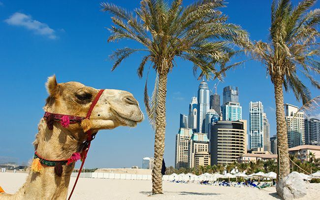

Привет! Я Светлана Заяц. Пишу тексты не по правилам, а для вашей целевой аудитории. Люблю четкую структуру и факты, знаю, что текст для рассылки и текст для ВК ― это два разных текста. На постоянной основе писала для делового журнала о промышленности России "ТСР", b2b интернет-портала о туризме Profi.Travel, компании-производителя средств от насекомых GET, Свердловского театра музыкальной комедии.
Репортажи и обзоры

Материал из рекламного тура в ОАЭ вместе с группой турагентов. Детальный обзор отелей + полезные факты об эмиратах. Агентам понравилось!
Интерактивные материалы: тесты, тренинги
Материал из рекламного тура в ОАЭ вместе с группой турагентов. Детальный обзор отелей + полезные факты об эмиратах. Агентам понравилось!
Рекламные статьи и новости
Материал из рекламного тура в ОАЭ вместе с группой турагентов. Детальный обзор отелей + полезные факты об эмиратах. Агентам понравилось!
Посты для соцсетей
Материал из рекламного тура в ОАЭ вместе с группой турагентов. Детальный обзор отелей + полезные факты об эмиратах. Агентам понравилось!
Интервью
Материал из рекламного тура в ОАЭ вместе с группой турагентов. Детальный обзор отелей + полезные факты об эмиратах. Агентам понравилось!